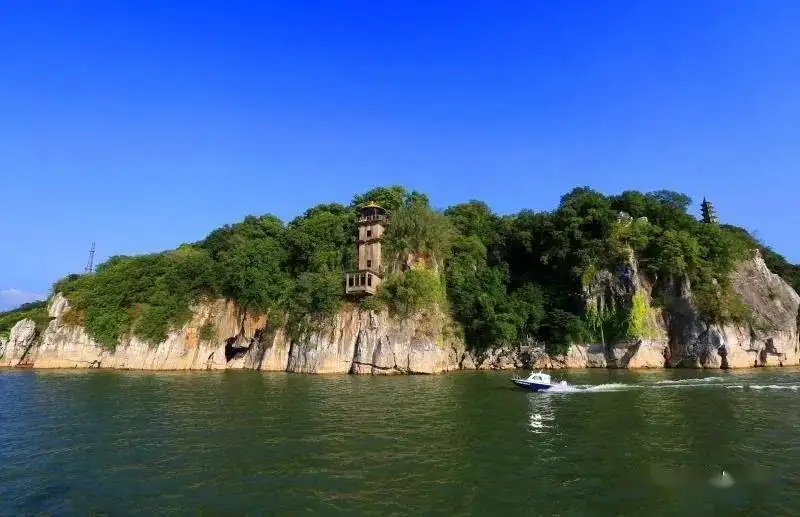
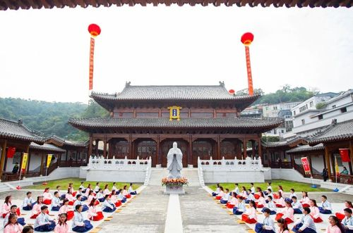
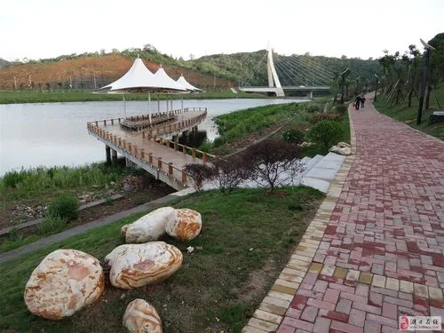
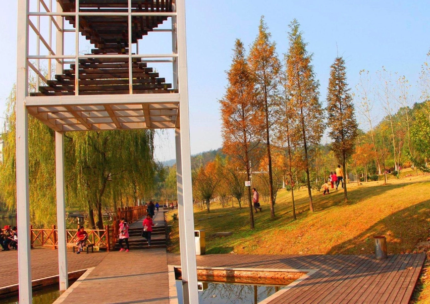
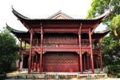
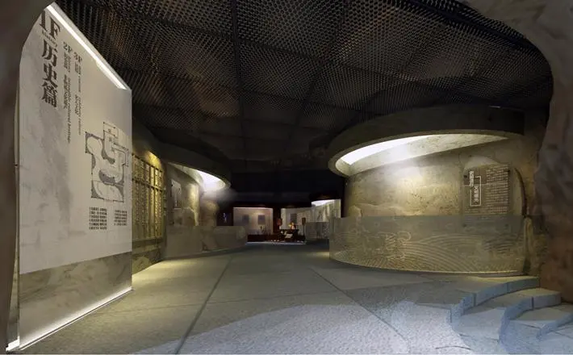

|

石钟山石钟山 ，素有“中国千古奇音第一山”之称，位于江西省九江市湖口县老城区，长江与鄱阳湖交汇处。 石钟山是国家AAAA级旅游景区，长江下游沿线上的主要景点、江西省十大旅游景区之一 。 石钟山海拔61.8米，相对高度约40米左右，面积0.2平方公里。因山石多隙，水石相搏，击出如钟鸣之声而得名。北宋大文学家苏轼曾夜泊山下，他撰写的《石钟山记》闻名天下，与石钟山相得益彰。 >>> |
|---|

鞋山鞋山国家AAAA级，又名鞋山岛，因其形似仙女遗落鄱阳湖中的鞋子而得名，这只被人誉为天下无双的“第一鞋”，被联合国教科文组织列入世界文化遗产的行列 。 鞋山位于江西省九江市湖口县（鄱阳湖口南侧9公里处的鄱阳湖中），距鄱阳湖入长江口仅几公里，与长江中小孤山遥遥相对，鞋山因此又称大孤山。大孤山远小孤山，月照洞庭归客船”便是唐代诗人描写鞋山的佳句。是庐山第四纪冰川遗迹，有“蓬莱仙岛”之称。 >>> |
|

湖口学宫湖口学宫，也叫湖口文庙，建于宋代庆历年间，新址位于江西省九江市湖口县大中路，鄱阳湖与长江交汇处东南角，石钟山脚下，月亮山西北麓，于2019年7月动工复建，总投资近3000万元，占地面积6000余平方米，纵深100余米，宽近40余米，主要单体建筑包括棂星门、厢房、展厅、东西长廊、冸池、大成门、大成殿、崇圣祠等。这种纯榫卯结构的古建筑群，在江西全省屈指可数 。 >>> |
|

洋港湿地公园洋港新区位于石钟山东麓，长江南岸，鄱湖之滨，洋港自然风光独特，区位条件优越，具有丰富的文化旅游资源。拟将洋港新区融入石钟山旅游圈，作为石钟山大文化旅游的延伸，在城市规划、旅游规划中注重旅游六要素的合理布局，将城市打造成一个旅游综合体。在洋港新区规划建设饮食一条街、特产购物一条街，在中心位置建设商业广场，在沿湖区域建设高档小区、会所、酒店、宾馆，吸引各地游客前往洋港休闲度假。大手笔整合相关旅游资源，在长江沿岸建设旅游码头，将象山建成一个新的景点，利用洋港湖开发湖口印象等水上游乐项目。在开发建设中珍视人文历史景观，彰显文化底蕴，提升城市品位。洋港区的建成，将使湖口实现园区、城区、景区三区互动，协调发展。 >>> |
|

台山公园台山公园，位于江西省九江市湖口县台山核心景区，是江西省省级公园。 台山公园由北京大学土人景观与建设规划设计院设计，总占地面积约360亩，绿化覆盖率87%，公园总要突出八大景观，即：霜草寒林、临亭怀苏、徒阶忆古、台山耸翠、芦塘落雁、响石析泉、台田花海、棹樯荡舟。 >>> |
灰山礼堂灰山礼堂(1968年) 灰山礼堂，位于湖口县舜德乡灰山村。此建筑原为清康熙广西总督屈尽美寻祖问根到湖口舜德乡灰山时修建的屈氏宗祠，1968年“文革”期间，村民拆屈氏宗祠，并利用原房屋材料改建现在的砖木结构建筑——灰山村村部。 >>> |
|

梅花厅建于石钟山最高处，也称“六十本梅花寄舫”、“卧雪吟香之馆”。俯瞰梅花厅，形状像一朵绽开的梅花。周围遍栽梅树，腊雪飘飘之时，白雪红梅，映衬高楼，景色十分壮观。彭玉麟联云：“长啸一声秋月白，寄怀千古远峰青。”并作《六十本梅花寄舫》七律一首。诗中有云：“流水小桥溶夜月，浮栏曲榭绕梅花。”彭玉麟还在这里卧吟梅花七绝一百首。 >>> |
|

湖口博物馆江西省湖口县博物馆从2011年9月8日开始，湖口县博物馆正式向社会公众免费开放。2011年9月8日上午8点18分，举行开馆庆典仪式。湖口粑俗、湖口草龙、湖口青阳腔等具有地方特色的文化遗产，让学生们领略了传统民间文化博大精深的内涵。 >>> |
古城宝鸡 璀璨文明
welcome to baoji|宝鸡欢迎您！